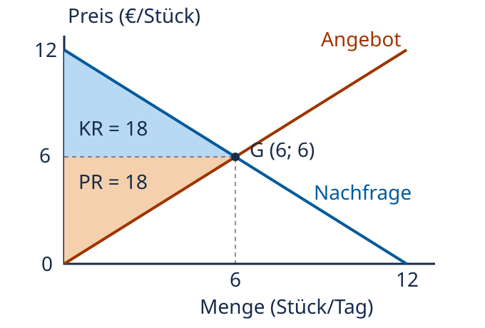

Gesamtrente, Effizienz und Pareto-Grenzen
VWL · Kurs 94931 · WiSe 2026/27
Warum sich der Preis herauskürzt
Konsumentenrente = Wert der gekauften Güter minus Käuferausgaben. Produzentenrente = Verkäufereinnahmen minus relevante Kosten. Ohne Steuern, Gebühren oder andere Zahlungsempfänger sind Käuferausgaben und Verkäufereinnahmen derselbe Betrag. In der Summe kürzt er sich heraus: Gesamtrente = Güterwert minus Ressourcenkosten. Der Preis verteilt den Überschuss zwischen Marktseiten; für sich allein schafft die Überweisung keinen zusätzlichen Ressourcenwert.
Im Wettbewerbsmodell werden Einheiten mit Zahlungsbereitschaft über Grenzkosten gehandelt. Bis zur Gleichgewichtsmenge bringt eine weitere Einheit einen positiven zusätzlichen Überschuss; darüber übersteigen die Grenzkosten den zusätzlichen Wert. Voraussetzung sind die passende Zuteilung an die höchstbewertenden Käufer und die kostengünstigsten Anbieter sowie freiwilliger Handel, Preisnehmer und das Fehlen nicht erfasster Effekte auf Dritte. Marktmacht, Externalitäten oder Informationsprobleme können die Schlussfolgerung aufheben.
Effizient heißt nicht gerecht verteilt. Eine Pareto-Verbesserung stellt mindestens eine Person besser und niemanden schlechter. Eine größere Gesamtrente genügt dafür nicht, wenn jemand verliert. Die Möglichkeit einer rechnerischen Kompensation ist noch keine tatsächlich durchgeführte Kompensation. Pareto-Effizienz bedeutet nur, dass keine weitere Pareto-Verbesserung möglich ist, nicht dass alle gleich viel besitzen.
Ein eigenes lineares Marktmodell
Eigene Funktionen, keine geschätzten Vorlesungswerte: inverse Nachfrage p_D = 12 − Q und inverses Angebot p_S = Q; p in €/Stück, Q in Stück pro Tag. Wir betrachten teilbare Mengen, keine Externalitäten und keine weiteren Kosten. Gleichsetzen ergibt Q = 6 Stück/Tag und p = 6 €/Stück. Konsumentenrente: ½ × 6 × (12−6) = 18 €/Tag. Produzentenrente: ½ × 6 × (6−0) = 18 €/Tag. Gesamtrente: 36 €/Tag.
Das folgende eigene Diagramm zeigt genau diese beiden Flächen und den Schnittpunkt; die Modellannahmen bestimmen, warum hier Dreiecke verwendet werden dürfen.

Die blaue Fläche liegt über dem Preis und unter der Nachfrage; die orange Fläche liegt unter dem Preis und über dem Angebot. Bei Q = 4 und effizienter Zuteilung ist der Güterwert 12 × 4 − ½ × 4² = 40 €/Tag und die Kostenfläche ½ × 4² = 8 €/Tag, also Gesamtrente 32 €/Tag. Die nicht gehandelten Einheiten von 4 bis 6 hätten noch 4 €/Tag zusätzlichen Überschuss erbracht. Für diese Rechnung wurde keine Zuteilung an zufällige Käufer unterstellt.
Bei festgehaltener Menge 4 und denselben Beteiligten wäre eine Änderung des gezahlten Preises nur eine Umverteilung zwischen beiden Renten. In einem unbeschränkten Markt kann ein anderer Preis aber auch Nachfrage und Angebot ändern. Deshalb darf man die Mengenannahme nicht stillschweigend fallen lassen.
Verstehen und anwenden
Eigene Übungen, keine offiziellen Aufgaben. Schreibe zuerst deinen Versuch mit Rechenweg, Einheiten und Annahmen auf. Nutze Hinweise nur bei Bedarf, öffne die Lösung getrennt und bewerte dich anhand der Kriterien. Offene Erklärungen werden nicht automatisch über Schlüsselwörter bewertet.
1. Die Kürzung und ihre Grenzen rekonstruieren
Dein Versuch: Leite Gesamtrente aus beiden Einzelrenten her. Erkläre, warum eine höhere Gesamtrente keine Pareto-Verbesserung beweist.
Optionaler Hinweis
Betrachte Zahlungsstrom und Ressourcenverbrauch getrennt.
Vollständige Musterlösung und Kriterien
Wert−Ausgabe + Einnahme−Kosten = Wert−Kosten, wenn Ausgabe und Einnahme übereinstimmen. Ein Preiswechsel verteilt die Zahlung bei gleicher Menge um. Ein Gewinner kann mehr gewinnen, als ein Verlierer verliert; die Summe steigt, obwohl der Verlierer schlechter steht. Pareto verlangt keine Verschlechterung für irgendeine Person.
Bewertung: Kürzung, Zahlungsbedingung, Summen-/Verteilungsunterschied, Pareto-Kriterium: je 1 Punkt (4).
2. Eigene Rechnung für einen anderen Markt
Dein Versuch: Eigener Markt: p_D = 18−2Q und p_S = Q, gleiche Einheiten wie oben. Berechne Gleichgewicht, beide Renten und Gesamtrente.
Optionaler Hinweis
Schnittpunkt bestimmen, danach Dreiecke mit derselben Basis.
Vollständige Musterlösung und Kriterien
18−2Q=Q ergibt Q=6 Stück/Tag und p=6 €/Stück. Konsumentenrente ½ × 6 × (18−6)=36 €/Tag. Produzentenrente ½ × 6 × 6=18 €/Tag. Gesamtrente 54 €/Tag. Die Preiszahlung 36 €/Tag ist weder Gesamtrente noch alleiniger Güterwert.
Bewertung: Gleichgewichtsmenge, Preis mit Einheit, Konsumentenrente, Produzentenrente, Summe/Abgrenzung: je 1 Punkt (5).
3. Eine Summenverbesserung beurteilen
Dein Versuch: Eine Maßnahme verändert A von 20 auf 32 € und B von 20 auf 15 € Rente. Jemand nennt dies sofort Pareto-Verbesserung und gerechte Verteilung. Prüfe; untersuche danach eine tatsächliche Zahlung von 6 € von A an B.
Optionaler Hinweis
Für Pareto jede Person einzeln mit vorher vergleichen.
Vollständige Musterlösung und Kriterien
Summe steigt von 40 auf 47 €, aber B verliert 5 €: ohne Kompensation keine Pareto-Verbesserung. Nach tatsächlicher kostenfreier Zahlung von 6 €: A=26 €, B=21 €, beide gegenüber vorher besser; nun Pareto-Verbesserung. Daraus folgt keine allgemeine Gerechtigkeitsbewertung. Die Zahlung ist ein eigener hypothetischer Transfer, keine automatisch erfolgende Marktleistung.
Bewertung: Summenanstieg, Verlust/Pareto-Nein, neue Werte/Pareto-Ja, Gerechtigkeits-/Transfergrenze: je 1 Punkt (4).
4. Transfer mit externen Schäden
Dein Versuch: Im Markt aus Aufgabe 2 entstehen nun 3 € Schaden je zusätzlichem Stück bei unbeteiligten Dritten. Bestimme die effiziente Menge und die Gesamtwohlfahrt einschließlich Schaden dort sowie bei der bisherigen Marktmenge.
Optionaler Hinweis
Vergleiche Zahlungsbereitschaft mit privaten Grenzkosten plus 3.
Vollständige Musterlösung und Kriterien
18−2Q = Q+3 ergibt Q=5 Stück/Tag. Wertfläche dort: 18 × 5−5²=65 €/Tag; private Kosten ½ × 5²=12,50 €/Tag; Schaden 15 €/Tag. Netto 37,50 €/Tag. Bei Q=6: Wert 72, Kosten 18 und Schaden 18, netto 36 €/Tag. Die Korrektur erhöht die Nettowohlfahrt um 1,50 €/Tag. Der alte Wettbewerbsschnittpunkt maximiert nur die hier unvollständige private Rentensumme. Damit ist noch kein konkretes politisches Instrument bewertet; Informations- und Durchführungskosten fehlen.
Bewertung: Q=5, 37,50 € mit Komponenten, 36 € bei Q=6, 1,50 €/Interpretation, Instrumentengrenze: je 1 Punkt (5).
Fehlerreflexion und verzögerte Wiederholung
Maximal 18 selbst bewertete Punkte (4 + 5 + 4 + 5). Notiere deinen ersten Fehler, seine Ursache und eine passende Gegenprobe. Prüfe insbesondere Teilnahme, Kostenbegriff, Einheit und individuelle Verteilung. Ein richtiges Ergebnis ohne erklärten Mechanismus erhält die Begründungspunkte nicht. Bearbeite unklare Aufgaben erneut. Morgen: Erkläre den Mechanismus und rechne Aufgabe 2 ohne Vorlage. In einer Woche: Löse Aufgabe 4 mit 4 statt 3 € externem Schaden neu; erkläre, welche Ergebnisse und Annahmen sich ändern. Vergleiche erst danach mit deiner heutigen Lösung.
Ergänzender Selbstcheck (MC)
Begründung anzeigen
a und c stimmen unter den erläuterten Annahmen. b ist falsch: Die Summenänderung schließt individuelle Verluste nicht aus.
Verwandte Lernseiten
Quelle und Grenzen
VWLWiInfWS26.pdf – Learnweb, Hochschulzugang, Kurs 94931, physische PDF-Seiten. Gelesen am 27.10.2026. Original und privater Extrakt bleiben unveröffentlicht.
- Gesamtrente und Effizienzmechanismus: S. 80–81 und 102–107. Originaldiagramm S. 104 tatsächlich angesehen. Eigene SVG-Grafik mit eigenen Funktionen und berechneten Flächen, keine Übernahme offizieller Zahlen.
- Pareto und alternative Kriterien: S. 82 und 108. Tatsächliche Kompensation, Verteilungsbeispiel und explizite Marktbedingungen sind didaktische Präzisierungen; kein empirisches Gerechtigkeitsurteil.
- Offene Aufgaben, Selbstcheck und Wiederholung: eigene didaktische Fälle zu den vorstehenden Mechanismen; keine offiziellen Prüfungsaufgaben. Neue Karten-/Werkstattwerte, Transferzahlungen und externe Schäden sind ausdrücklich hypothetisch. Grenzen und Teilnahmebedingungen gehören zur Lösung.